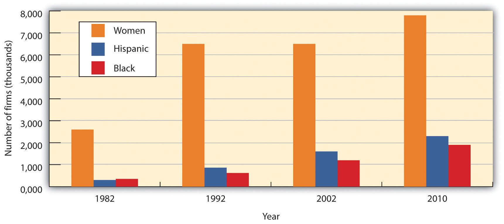

To assess the value of small businesses to the U.S. economy, we first need to know what constitutes a small business. Let’s start by looking at the criteria used by the Small Business Administration. According to the SBA, a small businessAccording to the SBA, a business that is independently operated, exerts little influence in its industry, and employs fewer than five hundred people. is one that is independently owned and operated, exerts little influence in its industry, and (with a few exceptions) has fewer than five hundred employees.“What is SBAs Definition of a Small Business Concern?,” U.S. Small Business Administration, http://www.sba.gov/content/what-sbas-definition-small-business-concern, (accessed August 28, 2011).
Small business constitutes a major force in the U.S. economy. There are more than twenty-seven million small businesses in this country, and they generate about 50 percent of our gross domestic product (GDP).Office of Advocacy, U.S. Small Business Administration, The Small Business Economy: A Report to the President, Appendix A (December 2010), http://www.sba.gov/content/small-business-economy-2010 (accessed August 28, 2011). The millions of individuals who have started businesses in the United States have shaped the business world as we know it today. Some small business founders like Henry Ford and Thomas Edison have even gained places in history. Others, including Bill Gates (Microsoft), Sam Walton (Wal-Mart), Steve Jobs (Apple Computer), Michael Dell (Dell, Inc.), Steve Case (AOL), Pierre Omidyar (eBay), and Larry Page and Sergey Brin (Google), have changed the way business is done today. Still millions of others have collectively contributed to our standard of living.
Aside from contributions to our general economic well-being, founders of small businesses also contribute to growth and vitality in specific areas of economic and socioeconomic development. In particular, small businesses do the following:
In addition, they complement the economic activity of large organizations by providing them with components, services, and distribution of their products.
Let’s take a closer look at each of these contributions.
The majority of U.S. workers first entered the business world working for small businesses. Today, half of all U.S. adults either are self-employed or work for businesses with fewer than five hundred employees.“How Important Are Small Businesses to the U.S. Economy?,” U.S. Small Business Administration, Office of Advocacy, http://www.sba.gov/advocacy/7495/8420, (accessed August 28, 2011). Although the split between those working in small companies and those working in big companies is about even, small firms hire more frequently and fire more frequently than do big companies.Brian Headd, “An Analysis of Small Business and Jobs,” U.S. Small Business Administration, Office of Advocacy, http://archive.sba.gov/advo/research/rs359tot.pdf (accessed August 30, 2011). Why is this true? At any given point in time, lots of small companies are started and some expand. These small companies need workers and so hiring takes place. But the survival and expansion rates for small firms is poor, and so, again at any given point in time, many small businesses close or contract and workers lose their jobs. Fortunately, over time more jobs are added by small firms than are taken away, which results in a net increase in the number of workers. Table 5.1 "Small Firm Job Gains and Losses, 1993–2008 (in millions of jobs)" reports the net increase in jobs generated by small firms for the fifteen-year period of 1993 to 2008 and breaks it down into job gains from openings and expansions and job losses from closings and contractions.
Table 5.1 Small Firm Job Gains and Losses, 1993–2008 (in millions of jobs)
| Job Gains From | Job Losses From | |||
|---|---|---|---|---|
| Net Change | Openings | Expansions | Closings | Contractions |
| 20.7 | 105.2 | 398.3 | 97.7 | 385.1 |
The size of the net increase in the number of workers for any given year depends on a number of factors, with the economy being at the top of the list. A strong economy encourages individuals to start small businesses and expand existing small companies, which adds to the workforce. A weak economy does just the opposite: discourages start-ups and expansions, which decreases the workforce through layoffs. Table 5.1 "Small Firm Job Gains and Losses, 1993–2008 (in millions of jobs)" reports the job gains from start-ups and expansions and job losses from business closings and contractions.
Given the financial resources available to large businesses, you’d expect them to introduce virtually all the new products that hit the market. According to the SBA, small companies develop more patents per employee than do larger companies. During a recent four-year period, large firms generated 1.7 patents per hundred employees, whereas small firms generated an impressive 26.5 patents per employee.Anthony Breitzman and Diana Hicks, “An Analysis of Small Business Patents by Industry and Firm Size, Office of Advocacy, Small Business Administration,” U.S. Small Business Administration, http://archive.sba.gov/advo/research/rs335tot.pdf, (accessed August 30, 2011). Over the years, the list of important innovations by small firms has included the airplane and air-conditioning, the defibrillator and DNA fingerprinting, oral contraceptives and overnight national delivery, the safety razor, strobe lights, and the zipper.William J. Baumol, “Small Firms: Why Market-Driven Innovation Can’t Get Along without Them” (U.S. Small Business Administration, Office of Advocacy, December 2005), table 8.1, 186, http://www.sba.gov/advo/research/sbe_05_ch08.pdf (accessed October 10, 2008).
Small business owners are also particularly adept at finding new ways of doing old things. In 1994, for example, a young computer-science graduate working on Wall Street came up with the novel idea of selling books over the Internet. During the first year of operations, sales at Jeff Bezos’s new company—Amazon.com—reached half a million dollars. In less than twenty years, annual sales had topped $34 billion.Yahoo.com, Amazon Income Statement, http://finance.yahoo.com/q?s=AMZN&ql=0 (accessed August 30, 2011). Not only did his innovative approach to online retailing make Bezos enormously rich, but it also established a viable model for the e-commerce industry.
Why are small businesses so innovative? For one thing, they tend to offer environments that appeal to individuals with the talent to invent new products or improve the way things are done. Fast decision making is encouraged, their research programs tend to be focused, and their compensation structures typically reward top performers. According to one SBA study, the supportive environments of small firms are roughly thirteen times more innovative per employee than the less innovation-friendly environments in which large firms traditionally operate.William J. Baumol, “Small Firms: Why Market-Driven Innovation Can’t Get Along without Them” (U.S. Small Business Administration, Office of Advocacy, December 2005), http://www.sba.gov/advo/research/sbe_05_ch08.pdf (accessed October 10, 2008), 187.
The success of small businesses in fostering creativity has not gone unnoticed by big businesses. In fact, many large companies have responded by downsizing to act more like small companies. Some large organizations now have separate work units whose purpose is to spark innovation. Individuals working in these units can focus their attention on creating new products that can then be developed by the company.
Small business is the portal through which many people enter the economic mainstream. Business ownership allows individuals, including women and minorities, to achieve financial success, as well as pride in their accomplishments. While the majority of small businesses are still owned by white males, the past two decades have seen a substantial increase in the number of businesses owned by women and minorities. Figure 5.3 "Businesses Owned by Women and Minorities" gives you an idea of how many American businesses are owned by women and minorities, and indicates how much the numbers grew between 1982 and 2007.“Estimates of Business Ownership by Gender, Ethnicity, Race, and Veteran Status: 2007,” U.S. Census Bureau, http://www.census.gov/econ/sbo/#hispanic (accessed August 30, 2011).
Figure 5.3 Businesses Owned by Women and Minorities
Source: Data obtained from http://www.census.gov/econ/sbo/#PR
Small firms complement large firms in a number of ways. They supply many of the components needed by big companies. For example, the U.S. automakers depend on more than 1,700 suppliers to provide them with the parts needed to make their cars. While many of the suppliers are large, there are hundreds of smaller companies that provide a substantial portion of the 8,000 to 12,000 parts that go into each vehicle.Bill Canis and Brent D. Yacobucci, “The U.S. Motor Vehicle Industry: Confronting a New Dynamic in the Global Economy, Congressional Research Service,” Federation of American Scientists, http://www.fas.org/sgp/crs/misc/R41154.pdf (accessed August 30, 2011). Small firms also provide large ones with such services as accounting, legal, and insurance. Many small firms provide outsourcing services to large firms—that is, they hire themselves out to help with special projects or handle certain business functions. A large firm, for example, might hire a small one to handle its billing or collection services or to manage its health care benefits. A large company might contract with a small information technology firm to manage its Web site or oversee software upgrades.
Small companies provide another valuable service to large companies by acting as sales agents for their products. For example, automobile dealerships, which are generally small businesses, sell vehicles for the big car makers. Local sporting goods stores sell athletic shoes made by industry giants, such as Adidas and Nike. Your corner deli sells products made by large companies, such as Coca-Cola and Frito-Lay.
The nearly twenty-seven million small businesses in the United States generate about 50 percent of our GDP. They also contribute to growth and vitality in several important areas of economic and socioeconomic development. In particular, small businesses do the following:
How “small” is a small business? If a substantial portion of small businesses in the United States suddenly closed, what would be the impact on the U.S. economy? How would all these closings affect workers, consumers, and other businesses?